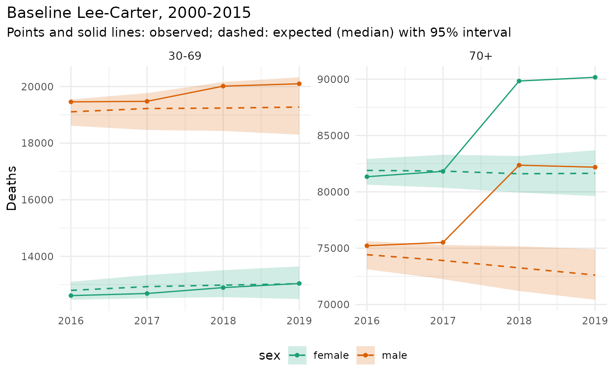

Excess deaths are the observed deaths minus the deaths expected without
the shock: the predictive deaths of a baseline model fitted to the years
before it, given the observed exposures of the later years. The WHO
estimates of the excess mortality of the COVID-19 pandemic follow this
approach with their own baseline model (Msemburi et al. 2023); Acosta
and Irizarry (2022) describe a model of the excess itself. Here the expected deaths are draws of
mt_forecast() with predictive = TRUE: the uncertainty of the
baseline trend plus the Poisson and extra-Poisson variation of the death
counts. The observed deaths minus each draw give draws of the excess.
When the baseline model holds, the interval of the excess covers the true
excess with its nominal probability, and an interval that contains zero
means deaths within the range of normal variation.
Usage
mt_excess(
model,
data,
baseline = NULL,
periods = NULL,
quantity = c("deaths", "life_expectancy"),
by = NULL,
ages = NULL,
cumulative = FALSE,
at = NULL,
n_draws = 500,
seed = NULL,
probs = c(0.025, 0.5, 0.975),
include_estimated = FALSE,
prep = NULL,
...
)
mt_plot_excess(
x,
type = c("expected", "excess", "p_score"),
level = 0.95,
colour = NULL
)Arguments
- model
An mt_fit of the baseline model, fitted to the years before the shock, or a model specification, which is then fitted to the
baselineyears ofdata.- data
An mt_data object with the observed deaths and exposures of the years of interest (it may also contain the baseline years).
- baseline
For a model specification: the first and last year of the baseline (
c(1990, 2002)).- periods
Years for which the excess is estimated (default: every year of
dataafter the baseline).- quantity
"deaths"or"life_expectancy".- by
Stratum variables kept in the result (default all, one row per stratum); the deaths of strata with the same values of
byare summed.character()sums all strata. Strata at the total or group levels of a hierarchy (seemt_aggregate_strata()) are left out of the sums over their variable.- ages
Age groups of the result:
NULLsums over all ages, a numeric vector gives the start of each group (c(0, 65, 85): 0-64, 65-84 and 85+; ages below the first value are left out), and"observed"keeps the age groups of the observed deaths. Observed cells must lie within the groups. Deaths only.- cumulative
Sum over the years of
periodsup to each year (deaths only). Columnfromgives the first year of the sum.- at
Age for life expectancy (default the first age).
- n_draws
Number of draws of the expected deaths.
- seed
Random seed of the forecast draws (
NULLleaves the random number generator as is).- probs
Quantile levels.
- include_estimated
Use cells whose deaths were estimated.
- prep
Preprocessing pipeline (
mt_prep()) for a model specification.- ...
Passed to the life-table calculation for life expectancy (
ax,open,k).- x
An
mt_excess()result.- type
"expected"(observed and expected values),"excess"or"p_score".- level
Level of the interval shown (its quantiles must be in
x).- colour
Stratum variable that gives the colours (default: the one with the most levels).
Value
mt_excess(): a data.table with the by variables, age,
age_lo and age_hi (deaths), period, observed, the mean and
quantiles of expected and excess (expected_mean,
expected_q0.025, ...), for deaths those of p_score, then
p_positive, cells and skipped; for life expectancy also at.
mt_plot_excess(): a ggplot object.
Details
The result gives, for each row, the observed deaths and the mean and quantiles of
expected: the expected deaths;excess: observed minus expected deaths;p_score: the excess in percent of the expected deaths,100 * excess / expected, computed draw by draw;
and p_positive, the share of draws with a positive excess.
Sums over ages (ages), strata (by) and years (cumulative) are formed
draw by draw before the quantiles are taken. With quantity = "life_expectancy", the excess is the observed life expectancy at age at
minus that of each draw of expected deaths, so a loss of life expectancy
is negative; strata are combined by summing their deaths and exposures.
The deaths are compared at their observed resolution: the draws on the
grid of the model are summed to each observed cell, so a model fitted on
single years of age (for example with prep = mt_prep(step_ungroup()))
can be compared with deaths in 5-year groups. As in mt_backtest(),
cells whose deaths were estimated (provenance "estimated", for example
suppressed cells filled by mt_fill_suppressed()) and missing cells are
left out unless include_estimated = TRUE; columns cells and
skipped count the cells used and left out. For life expectancy, years
with a cell left out are skipped with a warning.
The baseline should end with the last year before the shock and leave out years of other shocks (wars, earlier epidemics). Models need consecutive years, so the baseline is one span of years. The expected deaths of a long gap between the baseline and the shock (for example 1914-1917 for 1918 with a baseline 1900-1913) are forecasts over the whole gap, with correspondingly wide intervals.
mt_plot_excess() draws the result: observed and expected values over
the years (type = "expected"), or the excess or P-score with its
interval by age group (when there are several) or year. For one year and
one age group, each level of the colour variable (for example each
region) gets its own row.
References
Acosta RJ, Irizarry RA (2022). A flexible statistical framework for estimating excess mortality. Epidemiology 33(3): 346-353. doi:10.1097/EDE.0000000000001445
Msemburi W, Karlinsky A, Knutson V, Aleshin-Guendel S, Chatterji S, Wakefield J (2023). The WHO estimates of excess mortality associated with the COVID-19 pandemic. Nature 613: 130-137. doi:10.1038/s41586-022-05522-2
Examples
x <- mt_example(years = 2000:2019, deaths = "single")
# a shock: 10% more deaths at ages 70+ in 2018 and 2019
x$obs$deaths[period_lo >= 2018 & age_lo >= 70, value := round(1.1 * value)]
#> stratum age_lo age_hi period_lo period_hi value provenance
#> <int> <num> <num> <num> <num> <num> <char>
#> 1: 1 30 31 2000 2001 53 observed
#> 2: 1 31 32 2000 2001 57 observed
#> 3: 1 32 33 2000 2001 58 observed
#> 4: 1 33 34 2000 2001 57 observed
#> 5: 1 34 35 2000 2001 47 observed
#> ---
#> 2836: 2 96 97 2019 2020 1301 observed
#> 2837: 2 97 98 2019 2020 1042 observed
#> 2838: 2 98 99 2019 2020 721 observed
#> 2839: 2 99 100 2019 2020 559 observed
#> 2840: 2 100 Inf 2019 2020 890 observed
ex <- mt_excess(lee_carter(), x, baseline = c(2000, 2015), ages = c(30, 70),
n_draws = 200, seed = 1)
ex[, list(sex, age, period, observed, excess_q0.5, p_score_q0.025, p_score_q0.975)]
#> sex age period observed excess_q0.5 p_score_q0.025 p_score_q0.975
#> <char> <char> <num> <num> <num> <num> <num>
#> 1: female 30-69 2016 12612 -185.0 -3.7193102 1.1920965
#> 2: female 30-69 2017 12687 -242.5 -4.8970114 1.3443911
#> 3: female 30-69 2018 12895 -87.5 -4.5601307 2.6809026
#> 4: female 30-69 2019 13041 9.5 -4.4247675 4.4027760
#> 5: female 70+ 2016 81342 -560.5 -1.9052553 0.8744476
#> 6: female 70+ 2017 81817 -25.0 -1.7737349 1.8091008
#> 7: female 70+ 2018 89833 8228.5 7.9942921 12.3830894
#> 8: female 70+ 2019 90164 8522.0 7.7386203 13.2380700
#> 9: male 30-69 2016 19459 352.0 -0.4375878 4.5300483
#> 10: male 30-69 2017 19478 254.0 -1.4751127 5.4929109
#> 11: male 30-69 2018 20014 775.0 -0.7334315 8.5871145
#> 12: male 30-69 2019 20099 823.5 -1.1231044 9.8358980
#> 13: male 70+ 2016 75217 793.0 -0.5454548 2.8583239
#> 14: male 70+ 2017 75513 1605.0 0.2959892 4.5194131
#> 15: male 70+ 2018 82366 9111.0 9.5767595 15.6829512
#> 16: male 70+ 2019 82187 9570.5 9.6999225 16.7111119
if (requireNamespace("ggplot2", quietly = TRUE)) mt_plot_excess(ex)
